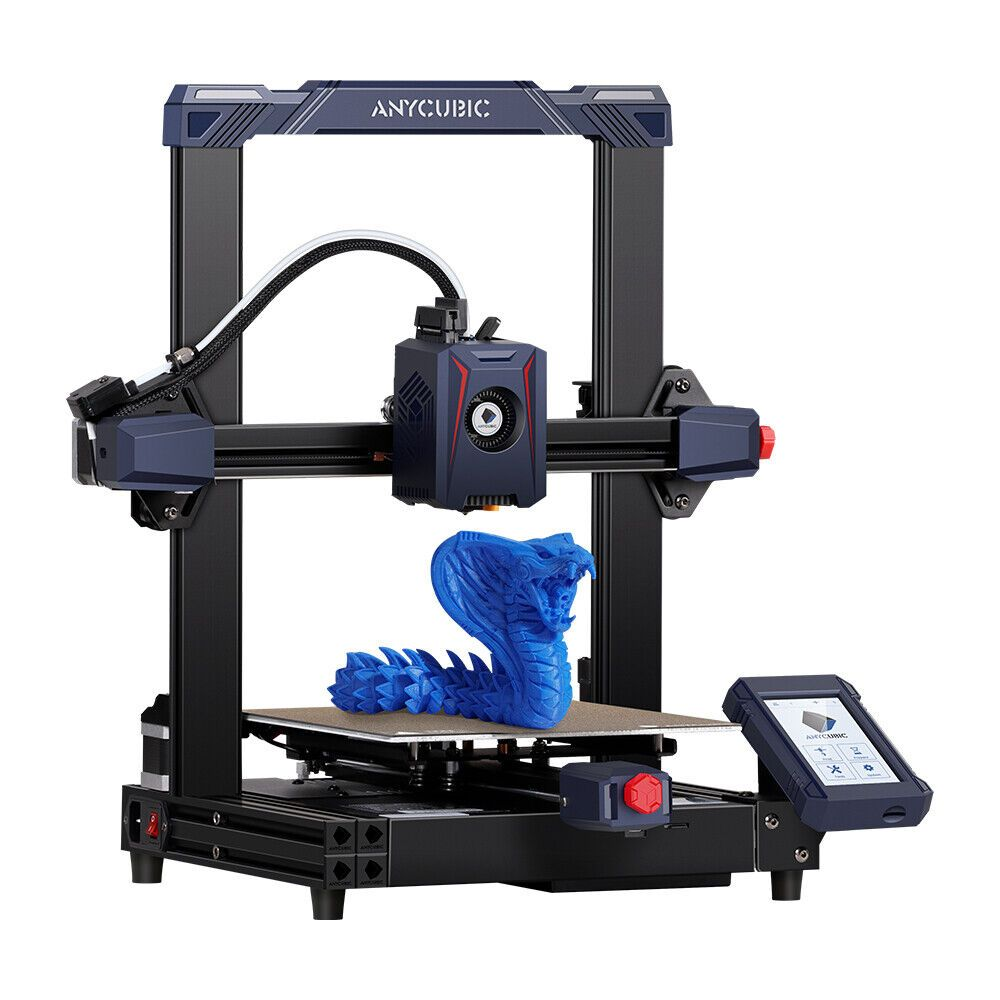
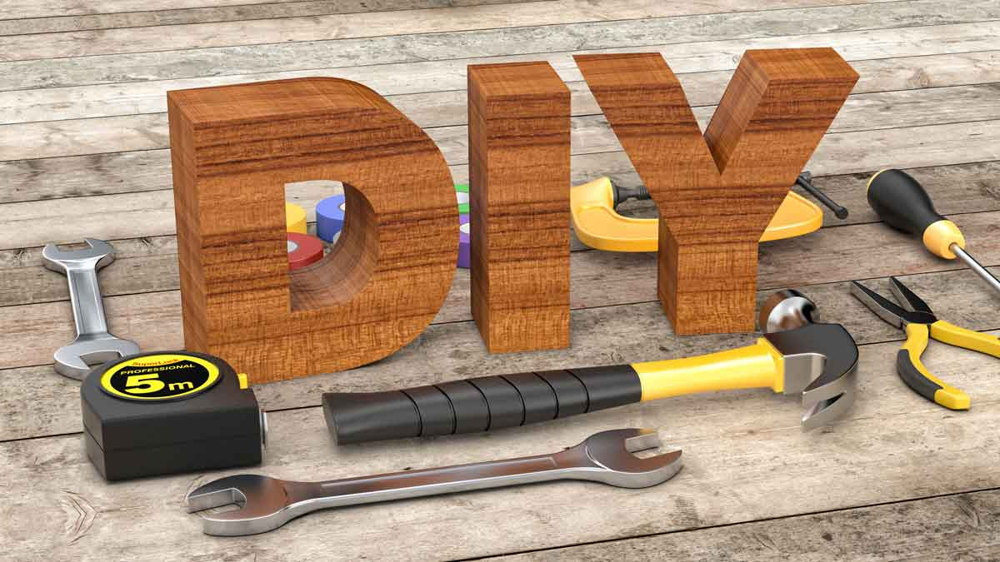

Большинство людей считает, что программирование - это работа. А кто-то считает, что программирование это хобби. Я не исключение. Как хобби я придумываю для себя задачи разработать десктопные приложения, или консольные приложения. И эти задачи я записываю в блокнот на будущее. В свободное от учебы время я выделяю время на разработку таких приложений.
3d-принтер - очень полезная штука. Применение широкое. Я печатаю детали для своих самоделок или какие-то полезные приспособления. Изучаю информацию на отечественном сайте 3dtoday. Умею проектировать детали в системе автоматизированного проектирования (САПР). Я использую для этих целей 3d-принтер Anycubic kobra 2 pro.
Для меня главное в DIY — это процесс творчества. Именно здесь рождаются уникальные решения, оригинальные идеи и новые подходы. Каждое изделие, сделанное собственными руками, несет частичку моей души, отражает мой характер и взгляды на мир. И при этом я использую навыки 3d-печати.